Создание простого коллажа
Я не придумал, как «обозвать» итоговую картину, поэтому урок назвал, что первое пришло на ум.
В этом уроке будет создан простенький коллажик с довольно симпатичным конечным результатом. Также, в некоторых местах будут задействованы не часто используемые инструменты, что в конечном итоге будет полезно для начинающих пользователей.
В данном коллаже будут использоваться изображения различного размера и разрешения, поэтому придется иногда заниматься подгонкой размера изображений. Но сначала нам потребуется проделать некоторую подготовительную работу, т. к. исходные изображения, как всегда, имеют лишнюю часть.
Итак, первое изображение – изображение лампы (рис. 1). С него и начнем.
Наша задача – выделить лампу, чтобы избавиться от фона. Как видите, справа от лампы (да собственно и с других сторон тоже) имеется большой кусок ненужного фона. В таких ситуациях, как эта, я рекомендую сначала просто обрезать лишнюю часть инструментом Crop (Обрезка), что сузить «поле деятельности».
Чтобы избавиться от фона, естественно надо выделить лампу. Ну, тут я по своей лености выделял фон инструментами Magic Wand Mask (Маска волшебной палочкой) и Brush Mask (Маска кисти), а затем инвертировал маску. Но по ходу выделения пожалел, что не использовал, например, Magnetic Mask (Магнитная маска) или Path (Путь). Но, в любом случае, вы можете использовать свои любимые инструменты для выделения лампы. Теперь можно сохранить изображение лампы вместе с маской, в файле .cpt. Т. к. Photo-Paint в этом случае сохраняет маску в файле, то вам незачем беспокоиться, что ваш труд пропадет. На этом подготовительный этап с лампой закончен.
Второе изображение – фото девушки (рис. 2).
Исходное изображение настолько большое, что пришлось его уменьшить в 10 раз для создания картинки для урока. Его оригинальные размеры 2592 х 2601 px при разрешении 72 dpi. Здесь нам предстоит аналогичная задача, что и в случае с лампой – выделить девушку. Здесь уже выделить с помощью Magic Wand Mask (Маска волшебной палочкой) и Brush Mask (Маска кисти) не составляет труда. Крылышки нам не понадобятся, т. к. нам нужна девушка, а не «бэтмен». На всякий случай маску лучше сохранить на диск, Mask > Save > Save Mask To Disk (Маска > Сохранить > Сохранить на диск) или, как минимум в канал: Mask > Save > Save as Channel (Маска > Сохранить > Сохранить как канал).
Но тут есть одна маленькая проблемка, в исходном изображении конец платья обрезан. А нам потребуется оно целиком. Нам пригодится второе изображение этой же девушки, в том же платье, но где оно изображено целиком (рис. 3).
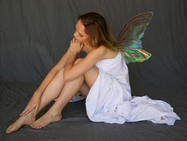
Это изображение еще больше предыдущего – 3099 х 2339 px и разрешение 72 dpi. Из второго изображения нам понадобится недостающий фрагмент платья.
Здесь все достаточно просто. Выделите любым инструментом часть изображения с недостающей частью платья. При этом нет необходимости выделять именно платье, можно выделить с частью фона, например, инструментом Rectangle Mask (Прямоугольная маска) (рис. 4).
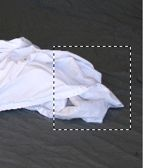
Настало время совместить платье и его недостающую часть. Для этого скопируйте выделение в Буфер обмена. Но тут вас будет подстерегать неприятный сюрприз, в виде нехватки места в первом изображении. Ведь вам необходимо по сути дела вставить недостающий фрагмент за пределы первого фото. Для решения этой проблемы перейдите на первое фото с девушкой (рис. 2). Выполните команду Image > Paper Size (Изображение > Размер бумаги) и в диалоговом окне Paper Size (Размер бумаги) в счетчике Width (Ширина) измените ширину, например, на 3592 px. Здесь не нужно опасаться задать значение больше необходимого.
Сейчас можно удалить маску. Вот теперь можно смело вставить содержимое Буфера обмена. Часть платья вставиться, как новый объект. Переместите вставленный объект и совместите, чтобы получилось целое платье (рис. 5).
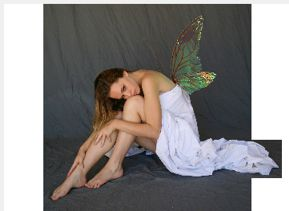
Тут также будет подвох, в виде линии стыковки, платья и недостающего фрагмента (рис. 6).
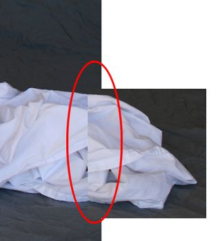
Для Photo-Paint решить эту проблему не составит труда, но сначала нужно объединить вставленный объект с фоном, нажав Ctrl + стрелка вниз. Воспользуемся инструментом Effect (Эффект). На Панели свойств в раскрывающемся списке Brush category (Категория кисти), выберите кисть Smudge (Размазывание). В раскрывающемся списке Brush type (Тип кисти), выберите тип Smudge a Little. Остальные настройки на Панели свойств оставьте по умолчанию. Теперь небольшими продольными (вдоль платья) мазками обработайте место стыка (рис. 7).
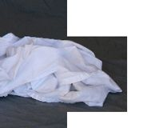
Когда вы будете обрабатывать кистью место стыка, то при большем увеличении будут видны некоторые небольшие «дефекты» от размазывания. Однако в нашей ситуации это не важно, т. к. в дальнейшем мы значительно уменьшим изображение девушки и они станут незаметными.
Т. к. в нашем распоряжении имеется готовая (сохраненная в канале) маска, то сейчас ее можно загрузить (Mask > Load >Alpha 1 (Маска > Загрузить > Альфа 1)). Теперь выделим добавленный фрагмент платья. Выберите инструмент Brush Mask (Маска кисти), нажав горячую клавишу В, а на Панели свойств переключитесь на режим Additive mode (Аддитивный режим) и выделите оставшуюся еще невыделенной часть платья. Сохраните файл.
Теперь займемся подготовкой фона. В качестве фона возьмем изображение на рис. 8.
Исходный размер этого фото 1200 х 1383 px при разрешении 180 dpi.
Несмотря на то, что это фото нельзя назвать светлым, тем не менее, мы его затемним еще больше. Но сделаем мы это за несколько шагов, вот каким образом.
Создадим линзу, так мы на всякий случай предохраним оригинал от всяких случайностей. Выполните команду Object > Create > New Lens (Объект > Создать > Создать линзу) или нажмите кнопку New Lens (Создание линзы) в нижней части докера Objects (Объекты). В окне New Lens (Создание линзы) выберите линзу Hue/Saturation/Lightness (Оттенок/Насыщенность/Яркость). В окне Hue/Saturation/Lightness (Оттенок/Насыщенность/Яркость) увеличьте значение насыщенности – Saturation (Насыщенность) = 27.
Создайте еще одну линзу, а в окне New Lens (Создание линзы) выберите линзу Gradient Map (Градиентная карта). В окне линзы оставьте настройки по умолчанию и нажмите ОК. Т. к. линза является объектом, то в докере Objects (Объекты) измените режим наложения этой линзы на Soft Light, а значение Opacity (Непрозрачность) установите равным 40% (рис. 9).
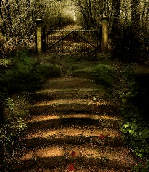
Теперь затемним изображение но так, чтобы лестница была видна в любом случае. Для этого воспользуемся градиентной заливкой. Нажмите клавишу G, чтобы вызвать инструмент Interactive Fill (Интерактивная заливка). Перед использованием этого инструмента убедитесь, что в качестве цвета краски, Foreground Color (Цвет переднего плана) выбран черный цвет. На Панели свойств, в списке Fill type (Тип заливки) выберите тип Radial (Радиальная), а в раскрывающемся списке Fill style (Стиль заливки), выберите вариант From Transparent to Paint (От прозрачности до цвета краски). Залейте изображение, как на рис. 10.
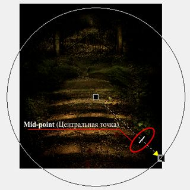
Обратите внимание, что после создания заливки, я сместил ее немного вниз, а также слегка перетащил Mid-point (Центральную точку) ближе к указателю конечного цвета заливки. На этом шаге все определяется вашим вкусом, т. е. насколько сильно вы хотите затемнить изображение. После завершения настроек, нажмите на Панели свойств кнопку Apply changes (Применить изменения).
Теперь начнем понемногу компоновать конечную картину. Откройте (или перейдите) к изображению с девушкой. Она должна быть у вас выделена и скопируйте ее в Буфер обмена. Перейдите обратно на изображение с фоном и вставьте ее. Т. к. девушка значительно больше фона, уменьшите ее с помощью инструмента Object Pick (Указатель объектов), потянув за угловой маркер.
Дальнейшие наши действия будут сосредоточены на подборе светов и теней. Нажмите клавишу G, чтобы вызвать инструмент Interactive Fill (Интерактивная заливка). Перед использованием этого инструмента убедитесь, что в качестве цвета краски, Foreground Color (Цвет переднего плана) выбран черный цвет. На Панели свойств, в списке Fill type (Тип заливки) выберите тип Linear (Линейная), а в раскрывающемся списке Fill style (Стиль заливки), выберите вариант From Transparent to Paint (От прозрачности до цвета краски), в раскрывающемся списке Merge mode (Режим слияния) выберите режим Substract. Для конечного указателя заливки установите в счетчике Transparency (Прозрачность) значение 40. Залейте изображение, как на рис. 11.
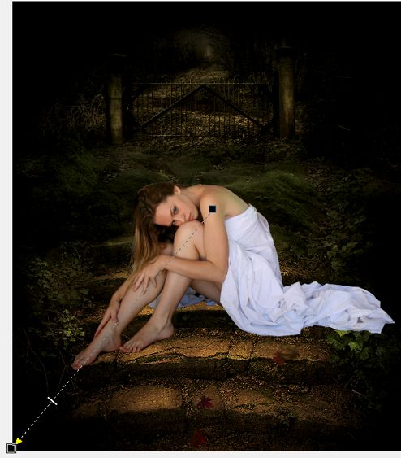
Таким образом мы слегка затенили девушку.
Нам необходимо добавить девушке чуть больше цвета и контраста. Для этого воспользуемся несколькими линзами. Создайте новую линзу Color Balance (Баланс цветов) и установите в окне линзы параметры, как на рис. 12.
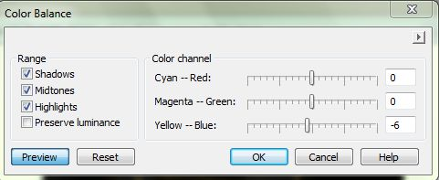
Создадим еще одну линзу, Hue/Saturation/Lightness (Оттенок/Насыщенность/Яркость) и увеличим значение Saturation (Насыщенности) до 20.
Создадим третью линзу, Contrast enhancement (Увеличение контрастности) и установим параметры, как на рис. 13.
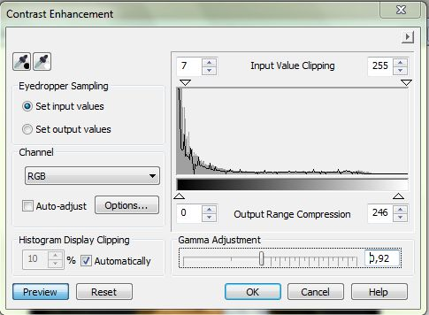
На этом этапе изображение будет выглядеть, как на рис. 14
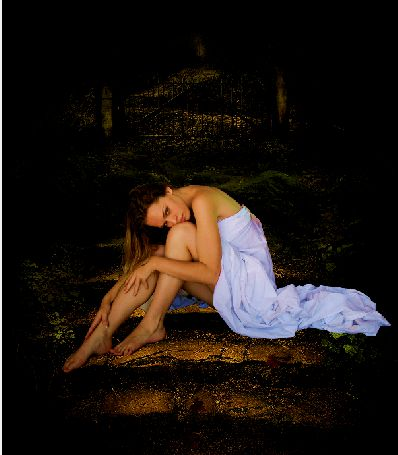
Здесь я сделаю небольшое замечание. При создании линз и подборе конечного результата, пользуйтесь своим собственным вкусом, установив настройки, которые будут отличаться от моих. Также, в результате действий, края изображения стали очень темными, что хотя и не портит общей картины, но может вас не устроить. Здесь вы тоже полагайтесь на свой вкус, если считаете, что фон должен быть виден полностью.
Создайте новый объект, нажав кнопку New Object (Новый объект) в докере Objects (Объекты). Нажмите клавишу F, чтобы активизировать инструмент Fill (Заливка). Выберите в качестве цвета заливки 50% серого и залейте объект. В докере Objects (Объекты) поменяйте режим наложения на Soft Light.
Теперь воспользуемся инструментом Effect (Эффект), нажав клавишу V. На Панели свойств, в раскрывающемся списке Brush category (Категория кисти) выберите инструмент Dodge/Burn (Осветление/Затемнение), а в списке Brush type (Тип кисти) выберите Burn Midtones. Обработайте те места на теле девушки, где должны быть темные области. Затем выберите тип кисти Dodge Midtones и обработайте там, где должны быть более светлые области. Если вы считаете, что и без дополнительной обработки все вас устраивает, то можете инструментом Effect (Эффект) не обрабатывать ничего. Я затемнил немного области на плечах и ногах.
Теперь дошла очередь до лампы. Пару слов о лампе. К сожалению найти лампу, такую как хотелось не удалось, поэтому пришлось выбрать из того что было. Из изображения с лампой, скопируйте лампу в нашу композицию. Уменьшите ее и разместите, как на рис. 15.
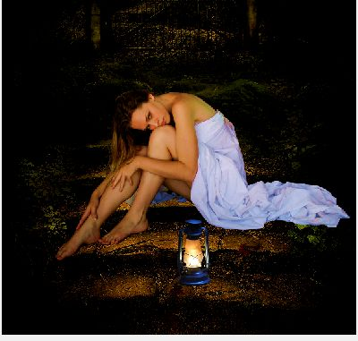
Теперь, когда у нас есть лампа, необходимо добавить свет от нее на земле. Создайте новый объект ниже объекта-лампы. Теперь воспользуемся инструментом Paint (Кисть), горячая клавиша P. Установите цвет краски: R: 233; G: 216; B: 155. Выберите большую мягкую кисть и установите примерно 200 – 300 px и проведите ей дважды по бокам лампы. Режим наложения, в докере Objects (Объекты) поменяйте на Overlay. Затем создайте еще один объект, установите цвет краски: R: 158; G: 151; B: 90 и закрасьте область под лампой и немного по краям (у самой лампы). В докере Objects (Объекты) поменяйте режим наложения на Color Dodge, а значение Opacity (Непрозрачность) уменьшите до 50 (рис. 16).
Осталось добавить тени, чтобы картинка стала более реалистичной. Для этого создайте новый объект ниже объекта-девушки. Выберите мягкую черную кисть, а на Панели свойств установите прозрачность 80-90%. Размеры кисти придется подбирать по ходу рисования. У меня получился размер кисти в пределах от 5 до 20 px. Места, где надо добавит тени показаны на рис. 17.
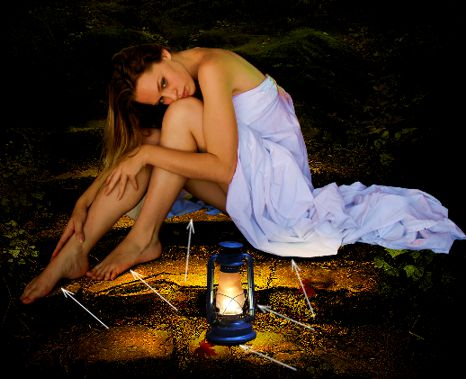
Можно (желательно) дополнительно затемнить спину девушки, потому что она получилась светлой. В конечном итоге получим изображение, как на рис. 18.
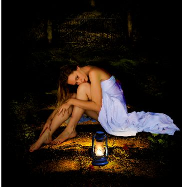
Если вы хотите получить несколько отличный результат, это не сложно сделать, подобрав нужные параметры по мере выполнения работы или на заключительном этапе дополнительно поэкспериментировать со светом и тенью.
Я вложил исходные изображения в прикрепленных файлах. Но т. к. изображения с девушкой большие "по весу", а размер файла не может превышать 2 Мб, то я разбил их WinRar-ом на части. Первое на 4 части, второе на 5 частей.